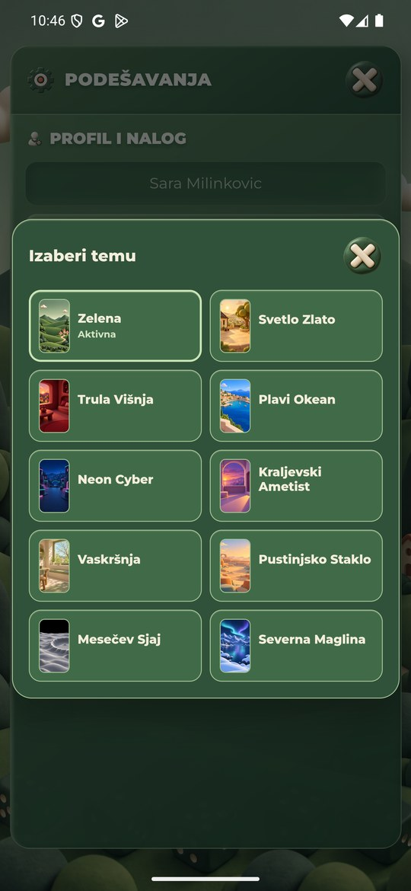
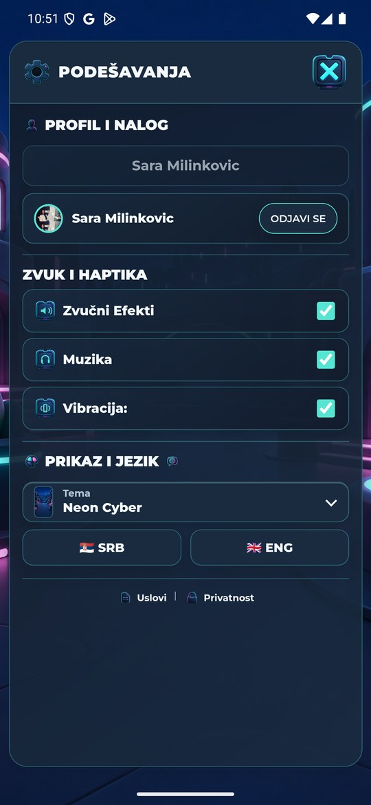
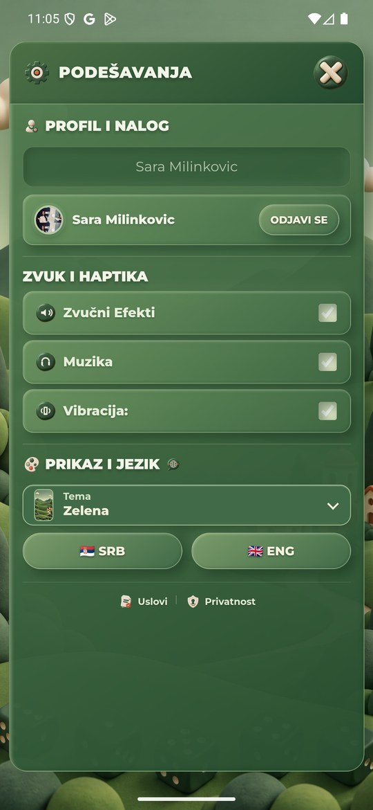

Izbor teme — stvarni QA snimci
Zasebni QA APK com.yamb.balkan.staging, emulator-5556,1440×3120/560dpi, objavljeni klijent v6.36/910b816c.
Prvi izbor Green→Neon nije primenjen; ponovljeni jeste. Zelena vraćena. Nema nove igre, poziva, oglasa ili pritiska na nagradu.
Ovo nisu precizna merenja trajanja učitavanja. ADB/native framebuffer je povremeno kasnio ili nije mogao da snimi kadar; neuspešne snimke ne tumačiti kao stanje aplikacije. Tačan spor PNG/HTTP zahtev nije identifikovan. Nije proveren prvi izbor svih deset tema, fizički telefon ili skin u aktivnoj igri.
R34/game.jsv6.38: pri ručnom izboru iz Podešavanja jedan automatski ponovni pokušaj koristi postojeći image/decode cache. Gate čeka oba vidljiva paketa i retry; konačan neuspeh čuva prethodnu kompletnu temu. Noviji izbor, offline stanje i promena naloga zaštićeni. Nije deployovano niti ovim Android snimcima potvrđeno. Vreme prvog preuzimanja nije ovim dokazano smanjeno.
Evidencija i lokalne provere
Početni izbor: Zelena aktivna, Neon dostupan.

Posle prvog izbora Neona ostala je Zelena.
Posle ponovljenog izbora primenjen Neon i njegovi PNG kontrolni elementi.

Vraćena Zelena tema i sačuvan srpski jezik.
